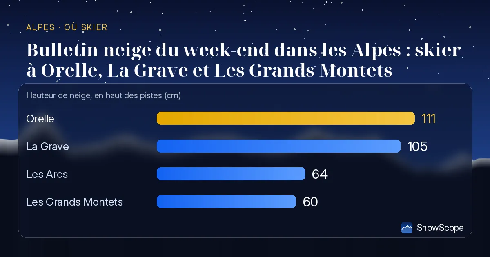

Bulletin neige du week-end dans les Alpes : skier à Orelle, La Grave et Les Grands Montets
Ce week-end, trois stations alpines se distinguent par leur épaisseur de neige et les précipitations attendues. Orelle conserve le plus—111 cm en haut des pentes—avec La Grave à 105 cm et Les Grands Montets à 60 cm. Une tempête importante arrive jeudi à samedi, ajoutant 100+ cm aux plus hautes altitudes et transformant la neige de rare à skiable dans toute la région.
Consultez les prévisions neige en temps réel pour Orelle sur l'application SnowScopeHauteurs de neige, alertes poudreuse et carte 3D, gratuitement.
Quelle station, quelle altitude
L'altitude décide de tout en début de saison. À Orelle, la base se situe à seulement 21 cm, mi-montagne tient 48 cm, mais le sommet atteint 82 cm. La Grave se porte mieux à toutes les altitudes : 86 cm à sa base (3 196 m), grimpant à 95 cm au sommet. Les Grands Montets présentent une pente plus forte—sol nu à 1 234 m mais 44 cm à 2 768 m—ce qui rend le terrain risqué sous la mi-montagne.
La zone mi-hauteur d'Orelle (2 779 m) affiche 36 cm aujourd'hui, bien en retrait des 58 cm typiques pour mi-novembre dans les hivers précédents. Pourtant, la station se classe plus profonde que 15 des 46 derniers novembre à cette date, suggérant que les tempêtes précoces collent quand il fait assez froid.
| Station | Hauteur de neige | Neige fraîche, 72 h | Attendu, jours suivants | Sommet |
|---|---|---|---|---|
| Orelle | 111 cm | 86 cm | 110 cm | 3 221 m |
| La Grave | 105 cm | 77 cm | 104 cm | 3 543 m |
| Les Grands Montets | 60 cm | 82 cm | 105 cm | 2 768 m |
| Les Arcs | 64 cm | 81 cm | 96 cm | 3 205 m |

Ce que la tempête apporte jour après jour
Jeudi 19 novembre apporte 50 cm à Orelle, 51 cm à La Grave et 42 cm aux Grands Montets. Vendredi 20 novembre déverse le plus : 52 cm à Orelle, 47 cm à La Grave, 53 cm aux Grands Montets. Samedi matin, l'accumulation ralentit à 8–10 cm sur les trois stations. Neige fraîche totale d'ici 21 novembre : 110 cm à Orelle, 104 cm à La Grave, 105 cm aux Grands Montets.
Le timing de la tempête peut se décaler sur les prévisions court terme, donc consultez la carte jeudi matin avant de partir. Le placement de cette neige compte autant que son volume : le niveau de congélation jeudi reste entre 2 390 m et 2 780 m, ce qui signifie que les pentes basses à Orelle risquent neige mouillée ou soupe, tandis que les sommets conservent la poudre.

Gel et dégel : lire le niveau de congélation
Vendredi 20 novembre, le niveau de congélation à Orelle descend à 2 340–2 780 m, menaçant toujours les pentes sous 2 500 m de conditions printanières. Samedi 21 novembre devient plus froid : le niveau de congélation chute à 2 270–2 350 m, verrouillant la neige hivernale sur presque tout le terrain d'Orelle. La Grave et Les Grands Montets, perchés plus haut, voient un froid encore plus tranchant vendredi et samedi—en particulier Les Grands Montets, où le niveau de congélation de samedi descend sous 2 100 m.
Les pentes exposées au sud absorbent le soleil et s'affaiblissent les premières. Cherchez les descentes orientées nord et les couloirs ombragés quand le risque de dégel-gel culmine. Samedi, le froid intense verrouille la neige fraîche partout.
Trois jours de croissance
Orelle a déjà absorbé 86 cm en trois jours (34 cm en 24 heures), prouvant que le système a soif de neige mouillée à ce stade. Attendez-vous à ce que la mi-montagne gagne 110 cm sur une semaine, le sommet se bâtissant 122 cm. La Grave a récolté 77 cm en trois jours, mi-montagne affichant maintenant 94 cm. Les Grands Montets, le plus marginal, a quand même capté 82 cm en trois jours malgré les bases basses.
La dernière carte de neige claire (14 novembre) a confirmé la neige sur les trois stations. Orelle et La Grave montraient une bonne couverture ; la neige aux Grands Montets était plus fine aux altitudes basses mais solide en montant.
Préparation du week-end : ce qu'il faut savoir
Samedi 21 novembre offre la meilleure fenêtre du week-end : neige fraîche de la tempête, températures froides la verrouillant en place, et niveaux de congélation stables au-dessus de la mi-montagne. D'ici là, 100+ cm de neige fraîche auront tombé aux sommets des trois stations depuis mercredi.
La neige de début de saison est trompeuse. Même 111 cm au sommet d'Orelle masquent une fine couche et des rochers exposés plus bas. Restez sur les pistes balisées et ouvertes jusqu'à ce que vous connaissiez le terrain. Les Grands Montets sont particulièrement risqués sous 2 000 m—évitez sauf si vous voyez du damage ou d'autres skieurs traçant prudemment.
Conseils aux skieurs
- Consultez le site de chaque station pour les ouvertures de remontées et la disponibilité du terrain. La neige sur la carte ne signifie pas que la station fonctionne.
- Visez samedi 21 novembre pour les meilleures conditions : froid, poudre fraîche, niveaux de congélation stables. Vendredi peut apporter neige mouillée sur les pentes basses et exposées au sud.
- Ciblez la mi-montagne et les sommets (2 779 m à Orelle, 3 369 m à La Grave). Les bases sont toujours fines ; les rochers se cachent sous la neige peu profonde.
- Skiez les pentes exposées nord et les aspects ombragés vendredi. Samedi, le gel protège partout, mais l'ombre gagne toujours en début de journée.
- Avant de quitter une piste, consultez le bulletin officiel d'avalanche de votre station choisie. Neige fraîche raide plus froid élevé le risque d'instabilité.
À propos de ces chiffres
Les hauteurs de neige des stations sont la neige la plus épaisse sur le haut du domaine à la date indiquée ; ce sont des estimations pour une zone, pas une mesure en un point. Les prévisions peuvent changer. Consultez toujours le bulletin d'avalanche officiel avant le hors-piste.
Bulletins d'avalanche officiels: EAWS (Alps)
Citer ce bulletin
Pour la recherche, l'enseignement ou la presse : chiffres et graphiques réutilisables librement sous CC BY 4.0 avec cette citation.
SnowScope (2026), Bulletin neige du week-end dans les Alpes : skier à Orelle, La Grave et Les Grands Montets, https://snowscope.app/blog/fr/2026/11/alps-where-to-ski-this-weekend-18-november-2026.html, consulté le 2026-11-18
SnowScope (Atlas Labs). (2026, November 18). Bulletin neige du week-end dans les Alpes : skier à Orelle, La Grave et Les Grands Montets. SnowScope snow reports. https://snowscope.app/blog/fr/2026/11/alps-where-to-ski-this-weekend-18-november-2026.html
BibTeX
@misc{snowscope2026alpswheretoskithisweeken,
author = {{SnowScope (Atlas Labs)}},
title = {Bulletin neige du week-end dans les Alpes : skier à Orelle, La Grave et Les Grands Montets},
year = {2026},
month = nov,
howpublished = {\url{https://snowscope.app/blog/fr/2026/11/alps-where-to-ski-this-weekend-18-november-2026.html}},
note = {Published 2026-11-18 11:02 UTC; accessed 2026-11-18}
}· CC BY 4.0 · Méthodes, données et outils →
Orelle : neige et température selon l'altitude, cet hiver vs l'hiver dernier (outils) →
Suivre Orelle
Gratuit : un message quand la neige arrive, et la météo chaque matin.
Autres bulletins neige

Arc 1600, 1800, 1950 et 2000 comparés pour la neige, les pistes et l'accès, avec 46 hivers passés de notre historique de neige à trois altitudes des Arcs.

Ce qui est vrai à La Grave, la montagne hors-piste sous la Meije : terrain, sécurité, neige par mois et tendance, d'après 46 hivers passés.